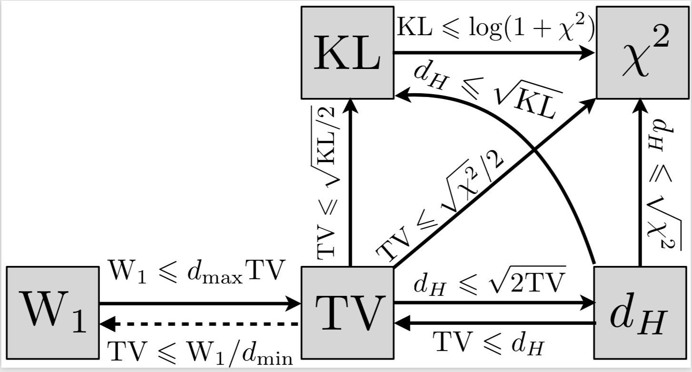

Statistical Divergences
This is a brief review of statistical divergences as explained in chapter 8 of Computational Optimal Transport. A divergence $D$ satisfies the following properties:
- $D(\alpha, \beta) \ge 0$.
- $D(\alpha, \beta) = 0 \Longleftrightarrow \alpha = \beta$
However, unlike a distance it does not have to be symmetric or satisfy the traingle inequality. Divergences compare two input measures by comparing their masses pointwise, without introducing any notion of mass transportation. Divergences are functionals which, by looking at the pointwise ratio between two measures, give a sense of how close they are. They have nice analytical and computational properties and build upon entropy functions.
- If ${\displaystyle X}$ is a topological space, ${\displaystyle x_{0}}$ is a point in ${\displaystyle X}$ and ${\displaystyle f\colon X\to \mathbb {R} \cup \{-\infty ,\infty \}}$ is an extended real-valued function. We say that ${\displaystyle f}$ is lower semi-continuous at ${\displaystyle x_{0}}$ if for every ${\displaystyle y<f(x_{0})}$ there exists a neighborhood ${\displaystyle U}$ of ${\displaystyle x_{0}}$ such that ${\displaystyle y<f(x)}$ for all ${\displaystyle x\in U}$. For the particular case of a metric space, this can be expressed as
The function ${\displaystyle f}$ is called lower semi-continuous if it is lower semi-continuous at every point of its domain. A function is lower semi-continuous if and only if ${\displaystyle \{x\in X:~f(x)>y \}}$ is an open set for every ${\displaystyle y\in \mathbb {R} }$. Alternatively, a function is lower semi-continuous if and only if all of its lower level sets ${\displaystyle \{x\in X:~f(x)\leq y\}}$ are closed. Lower level sets are also called sublevel sets or trenches.
- If ${\displaystyle X}$ is a topological space, ${\displaystyle x_{0}}$ is a point in ${\displaystyle X}$ and ${\displaystyle f\colon X\to \mathbb {R} \cup \{-\infty ,\infty \}}$ is an extended real-valued function. We say that ${\displaystyle f}$ is upper semi-continuous at ${\displaystyle x_{0}}$ if for every ${\displaystyle y>f(x_{0})}$ there exists a neighborhood ${\displaystyle U}$ of ${\displaystyle x_{0}}$ such that ${\displaystyle f(x)<y}$ for all ${\displaystyle x\in U}$. For the particular case of a metric space, this can be expressed as
The function ${\displaystyle f}$ is called upper semi-continuous if it is upper semi-continuous at every point of its domain. A function is upper semi-continuous if and only if ${\displaystyle \{x\in X:~f(x)<y\}}$ is an open set for every ${\displaystyle y\in \mathbb {R} }$.
-
A function is continuous at $x_0$ if and only if it is both upper and lower semi-continuous there.
-
A function $\phi : \mathbb{R} \to \mathbb{R} \cup \{\infty\}$ is an entropy function if it is lower semicontinuous, convex, $\mathrm{dom} ~\phi\subset [0,\infty)$, and satisfies the following feasibility condition: $\mathrm{dom} ~ \phi \; \cap (0, \infty) \neq \emptyset$. The speed of growth of $\phi$ at $\infty$ is described by
If $\phi’_\infty = \infty$, then $\phi$ grows faster than any linear function and $\phi$ is said superlinear. Any entropy function $\phi$ induces a $\phi$-divergence or $f$-divergence) as defined below.
- Let $\phi$ be an entropy function. For $\alpha,\beta \in \mathcal{M}(\mathcal{X})$, let $\frac{\mathrm{d} \alpha}{\mathrm{d} \beta} \beta + \alpha^{\perp}$ be the Lebesgue decomposition of $\alpha$ with respect to $\beta$. The divergence $\mathcal{D}_\phi$ is defined by
if $\alpha,\beta$ are nonnegative and $\infty$ otherwise.
- In case of discrete measures $\alpha = \sum_i a_i \delta_{x_i}$ and $\beta = \sum_i b_i \delta_{x_i}$ which are supported on the same set of $n$ points $(x_i)_{i=1}^n \subseteq \mathcal{X}$ the $\phi$-divergence is defined as
where \(\mathrm{Supp}(b) \triangleq \{i \in \mathbb{[} n \mathbb{]} ~:~ b_i \neq 0 \}\).
- Many divergences can be written as $\phi$-divergence. Here are a few examples:
| Name | \(D_f(P \lVert Q)\) | Generator $\phi$ |
|---|---|---|
| KL-divergence | $\int p(x) \log \left( \frac{p(x)}{q(x)} \right) \mathrm{d}x$ | ${\displaystyle t\log t}$ |
| reverse KL-divergence | $\int q(x) \log \left( \frac{p(x)}{q(x)} \right) \mathrm{d}x$ | ${\displaystyle -\log t}$ |
| squared Hellinger distance | $\int \left( \sqrt{p(x)} - \sqrt{q(x)} \right) ^2 \mathrm{d} x$ | $({\sqrt {t}}-1)^{2},\,2(1-{\sqrt {t}})$ |
| Total variation distance | $\frac{1}{2} \int \lvert p(x) - q(x) \rvert \mathrm{d} x$ | $\frac{1}{2} \lvert t - 1 \rvert$ |
| Pearson $\chi ^{2}$-divergence | $\int \frac{(p(x) - q(x))^2}{p(x)}\mathrm{d} x$ | ${\displaystyle (t-1)^{2},\,t^{2}-1,\,t^{2}-t}$ |
| Neyman $\chi ^{2}$-divergence | $\int \frac{(p(x) - q(x))^2}{q(x)}\mathrm{d} x$ | ${\displaystyle {\frac {1}{t}}-1,\,{\frac {1}{t}}-t}$ |
| Jensen-Shannon divergence | \(\frac{1}{2} \int p(x) \log \left( \frac{2p(x)}{p(x) + q(x)} \right) + q(x) \log \left( \frac{2q(x)}{p(x) + q(x)} \right)\mathrm{d} x\) | $-(1+t)\log \left( \frac{1+t}{2} \right) + t \log(t) $ |
- A few more resources to read about $\phi$-divergences:
-
Renyi divergence is a generalization of KL-divergence by using the Renyi-entropy function which is a generalization of Shannon-entropy.
- The following diagram shows some of the inequalities that hold between different divergences: 